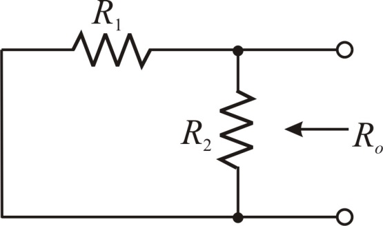
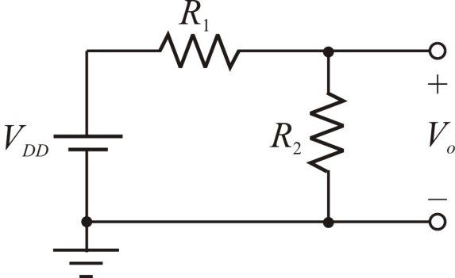
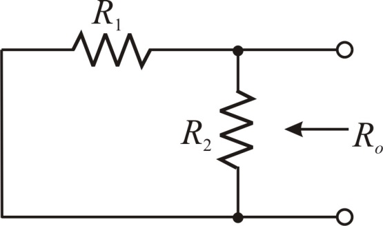

Calculate the output voltage,  using voltage division rule.
using voltage division rule.
Therefore, the output voltage,  is .
is .
Draw the circuit diagram, to calculate the Thevenin resistance.

Figure 2
Refer to Figure P1.6 in the textbook.
Draw the modified circuit of Figure P1.6.

Figure 1
Calculate the output voltage, using voltage division rule.
Therefore, the output voltage, is .
Draw the circuit diagram, to calculate the Thevenin resistance.

Figure 2
From Figure 2, the equivalent output resistance is,
Therefore, the output resistance,  is .
is .